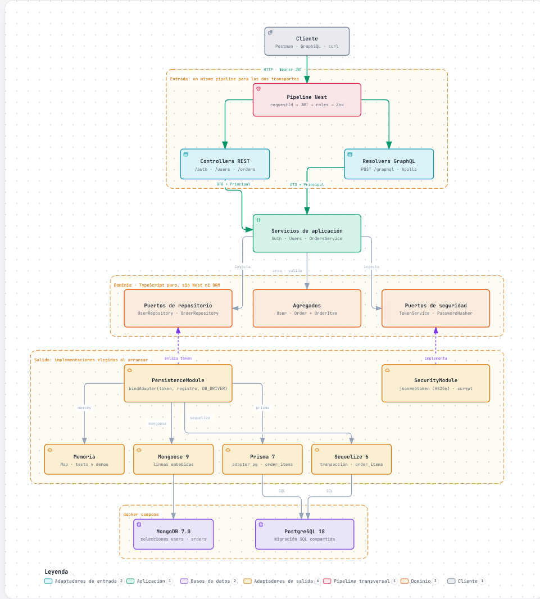
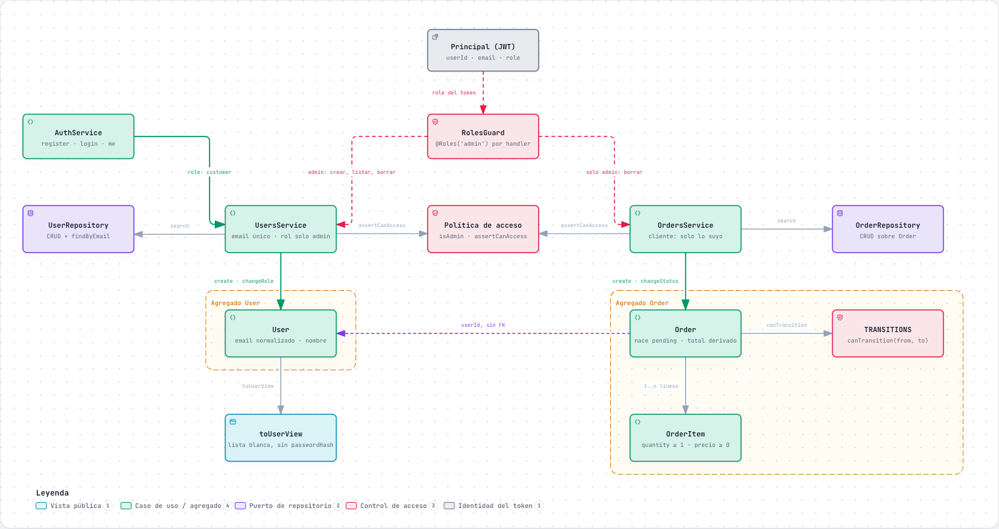
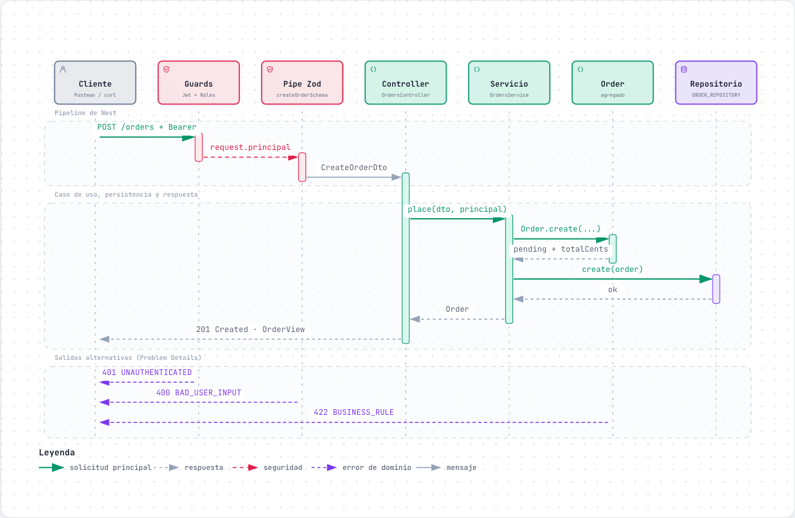
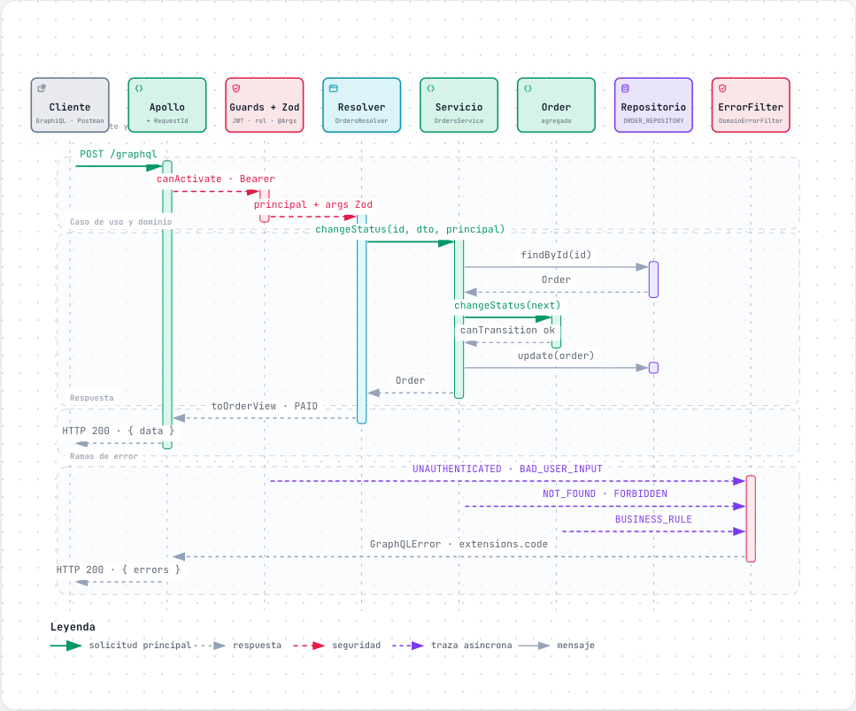
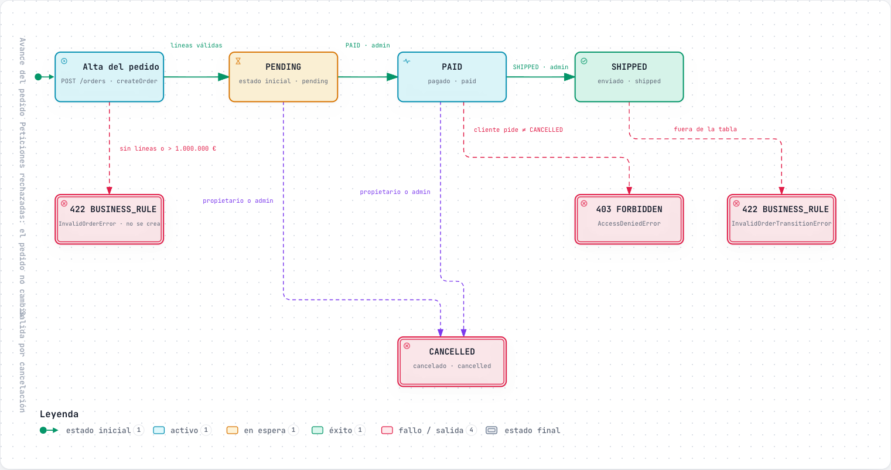
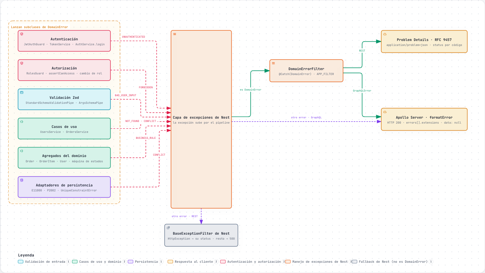

01Arquitectura hexagonal
Entradas REST y GraphQL, dominio con sus puertos y los cuatro adaptadores que elige DB_DRIVER.

06Dominio y reglas de negocio
Agregados User y Order, invariantes y políticas de acceso por rol y por propiedad.

02Secuencia REST: crear pedido
POST /orders de punta a punta, con las salidas 401, 400 y 422.

03Secuencia GraphQL: cambiar estado
updateOrderStatus: el mismo caso de uso, un único endpoint y errores en extensions.code.

04Ciclo de vida del pedido
PENDING → PAID → SHIPPED y CANCELLED, quién mueve cada transición y qué se rechaza.

05Manejo de errores
De dónde sale cada DomainError y cómo se traduce a Problem Details o a GraphQLError.